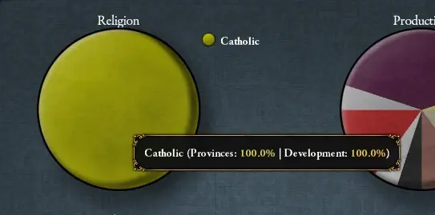

宗教（英文：Religion）是欧陆风云4的重要组成部分，它既表现了国家对某种神明或思想的虔信，又涵盖了人民对其他异端邪说的宽容。对外，同宗教的国家间关系将更为友善，更易于达成外交协定；异宗教的国家间关系则更为紧张，更易发生冲突。对内，信奉国教的省份更为安定，人民更为顺从；信奉异宗教的省份则更为叛逆，更为动荡不安。玩家可以通过多种方法改变国家宗教，这会导致多种内政外交上的反转；也可以用传教士等改变某一省份的宗教，促使该地与国家达成宗教统一。
宗教与教派
注意：不同宗教的信息目前已分别录入各个宗教组的页面，统一的“宗教与教派”页面不再使用。可以通过页面顶部右侧的导航栏直接查看各宗教和教派。
在游戏中，世界上的各种宗教和教派被分为了若干个宗教组；每个宗教组中都有若干种教派。同一宗教组的不同教派之间彼此视为
关于各个宗教和教派的详细机制和内容，可以通过页面顶部右侧的导航栏直接查看各宗教和教派。
自EU4首次问世以来，它的许多特色宗教都得到了进一步发展，并以独特的机制得到充实。
在开启一些DLC后很多宗教都有了新的机制，下表将列出对应关系。
| DLC | 获得新机制的宗教 |
|---|---|
| |
| |
| |
| |
| |
| |
| |
| |
| |
| |
| |
|
宗教统一
 宗教统一是除贸易公司所属省份之外，所有信奉正统信仰或正容忍的异端/异教省份的发展度占总发展度的比值。
宗教统一是除贸易公司所属省份之外，所有信奉正统信仰或正容忍的异端/异教省份的发展度占总发展度的比值。
- 无论容忍有多少，信奉正统信仰的省份永远提供100%的
 宗教统一。
宗教统一。 - 异端/异教造成的 宗教统一惩罚取决于其容忍度。
上述的贡献比例如下表所示：
| 容忍 | 惩罚 |
|---|---|
| 负容忍 | -100% |
| 0容忍 | -75% |
| 1容忍 | -50% |
| 2容忍 | -25% |
| 3容忍 | 0% |
比如说，一个 天主教国家有一个10发展度的
天主教国家有一个10发展度的 天主教省份，一个4发展度的
天主教省份，一个4发展度的 新教省份和一个16发展度的
新教省份和一个16发展度的 逊尼派省份。此时如果该国的异端容忍为+1，异教容忍为-2，其宗教统一即为 1-(0%*10 + 50%*4 + 100%*16)/(10 + 4 + 16) = 40%。
逊尼派省份。此时如果该国的异端容忍为+1，异教容忍为-2，其宗教统一即为 1-(0%*10 + 50%*4 + 100%*16)/(10 + 4 + 16) = 40%。
下表为增加宗教统一的理念和政策：
宗教统一直接带来以下效果：
- 每1%的宗教统一：[1]
| +0.01 | 月度狂热 | |
| +0.05 | 专制度上限 | |
| +0.05 | 教士忠诚度平衡 | |
| +0.05 | 婆罗门忠诚度平衡 |
- 每1%低于100%的宗教统一：[2]
| +1.0% | 稳定花费修正 | |
| +0.03 | 全国叛乱 | |
| −1.0% | 教会力量 | |
| −0.01 | 年度奉献度 | |
| +0.001 | 年度腐败度 |
容忍
每一个国家都有三项容忍值——  正统信仰容忍、
正统信仰容忍、 异端容忍和
异端容忍和 异教容忍。这三项容忍在全国都是一致的，每一个省份都会根据其本地的宗教与国家正统信仰的关系决定其适用哪一种容忍。
异教容忍。这三项容忍在全国都是一致的，每一个省份都会根据其本地的宗教与国家正统信仰的关系决定其适用哪一种容忍。
每点正容忍给予：[3]
| −1 | 本地叛乱 |
每点负容忍给予：[4]
| +1.25 | 本地叛乱 | |
| −10% | 本地税收修正 | |
| −10% | 本地贸易货物生产修正 |
此外，异端和异教的正容忍会减轻国内异端、异教省份给国家带来的  宗教统一惩罚。
宗教统一惩罚。
请注意，部分国家理念和通用理念可以  免除所有负宗教容忍带来的惩罚。
免除所有负宗教容忍带来的惩罚。
| 传统 | 理念 | 奖励/野心 | 政策 | |
|---|---|---|---|---|
| yes |
|
|
— | — |
正统信仰容忍
顾名思义，正统信仰容忍与你国家的  正统信仰有关。比如一个
正统信仰有关。比如一个  天主教国家的
天主教国家的  天主教省份就应用此值。此值的基础值为+3，且不设上限。
天主教省份就应用此值。此值的基础值为+3，且不设上限。
| 传统 | 理念 | 奖励/野心 | 政策 | |
|---|---|---|---|---|
| +3 |
|
— | — | — |
| +2 |
|
|
|
— |
| +1 |
|
|
— | — |
一些宗教對信仰該宗教的國家帶來正統信仰容忍的加成：
- +3
 儒教達到100%和諧度
儒教達到100%和諧度 - +2 信仰
 猶太教或
猶太教或 祆教
祆教 - +2
 拜物教國家崇拜物選擇「姆利拉」
拜物教國家崇拜物選擇「姆利拉」 - +2 是
 騰格里信仰並且兼容
騰格里信仰並且兼容  泛靈論、拜物教或
泛靈論、拜物教或  圖騰崇拜
圖騰崇拜 - +1 信仰
 天主教、
天主教、 東正教、
東正教、 科普特正教、
科普特正教、 印度教、泛靈論、圖騰崇拜、
印度教、泛靈論、圖騰崇拜、 因蒂崇拜或
因蒂崇拜或 瑪雅宗教
瑪雅宗教 - +1
 胡斯派國家宗教信條選擇「餅與酒」
胡斯派國家宗教信條選擇「餅與酒」 - +1 是 騰格里信仰並且兼容 東正教、
 金剛乘佛教、因蒂崇拜或祆教
金剛乘佛教、因蒂崇拜或祆教
其他修正：
 异端容忍
异端容忍
对国教所属宗教组中其他信仰的容忍值。比如  逊尼派国家中，同属伊斯兰教的
逊尼派国家中，同属伊斯兰教的  什叶派和
什叶派和  伊巴德派省份就应用此值。其基础值为–2，上限值为+3。上限值受到以下的影響：
伊巴德派省份就应用此值。其基础值为–2，上限值为+3。上限值受到以下的影響：
一些宗教對信仰該宗教的國家帶來異端容忍的加成：
- +2 信仰
 改革宗、
改革宗、 大乘佛教、
大乘佛教、 上座部佛教或儒教
上座部佛教或儒教 - +1 信仰金剛乘佛教
- +1 胡斯派國家宗教信條選擇「宣講自由」
- +1 是 騰格里信仰並且兼容 印度教
某些政府改革帶來異端容忍的加成：
- +2 共和制改革「平等原則」
- +2 共和制改革「革命共和國」
- +2 共和制改革「革命國家」
- +2 神權制改革「神的眾多手指」
- +1 君主制改革「卡爾沙的力量」
额外修正：
- +2
 夢創神話國家啟用崇拜物「達摩之夢」
夢創神話國家啟用崇拜物「達摩之夢」 - +2
 錫克教國家擁有上師德格·巴哈杜爾
錫克教國家擁有上師德格·巴哈杜爾 - +2 在特利騰大公會議第一項討論中選擇懷柔立場： 秘密告解
- +2 市民特權「強制宗教間對話」
- +1 君主拥有 「宽容」特质
- +1 正統性達到100
- +1 國會通過議案「保障宗教少數派權利」
- +1
 莫卧儿同化曼德文化組
莫卧儿同化曼德文化組 - -1 正統性爲0
- -2 教士特權「強迫宗教統一」
- -2 教士特權「宗教文化」
异端转化事件
高于2的异端容忍会使省份触发事件随机转化为相应的异端教派。此转化事件的平均发生时间为5000个月，会由革新理念和邻接的对应宗教省份降低；会由神权国政体增加。“宗教狂热”修正会阻止此事件的发生。
省份更倾向于通过事件转为邻接省份的那个宗教，但邻接却往往不是转化的必要条件。但以下事件则必须在邻接时才会发生：
- 东正教 ↔ 其他基督教教派
- 逊尼派 ↔ 其他伊斯兰教教派
- 佛教、神道教[5] ↔ 儒教
- 印度教 ↔ 锡克教
- 泛灵论 ↔ 拜物教、图腾崇拜
 异教容忍
异教容忍
对其他宗教组宗教的容忍值。比如 天主教国家中的
天主教国家中的  泛灵论省份就应用此值。此值的基础为-3，理论上限为+3。上限值受到以下的影響：
泛灵论省份就应用此值。此值的基础为-3，理论上限为+3。上限值受到以下的影響：
- +1
 布哈拉理念「布哈拉猶太人」
布哈拉理念「布哈拉猶太人」 - +1 通用政府改革「將教士從國家中分離」
- +1 通用政府改革「加強齊米」
- +1 神權制改革「部分世俗化」
一些宗教對信仰該宗教的國家帶來異教容忍的加成：
- +2 信仰拜物教
- +2 是 騰格里信仰並且兼容 印度教或大乘佛教
- +2 猶太教信條「源自亞伯拉罕」
- +1 信仰印度教
某些政府改革帶來異教容忍的加成：
- +3 君主制改革「印度蘇丹國」
- +2 共和制改革「平等原則」
- +2 神權制改革「神的眾多手指」
- +1 君主制改革「卡爾沙的力量」
额外修正：
- +3 夢創神話國家啟用崇拜物「達摩之夢」
- +2 金璽詔書「信徒虔敬」
- +2 拜物教國家崇拜物選擇「芙蕾雅」
- +2 印度教國家主神選擇「佛陀」
- +2 市民特權「強制宗教間對話」
- +2 作爲伊斯蘭教国家，
 忠誠的齊米階層擁有高於60%的影響力，低於此影響力則修正值降低
忠誠的齊米階層擁有高於60%的影響力，低於此影響力則修正值降低 - +2 齊米特權「保障宗教少數群體的權利」
- +1 君主拥有 「宽容」特质
- +1 正統性達到100
- +1 國會通過議案「保障宗教少數派權利」
- +1 婆羅門特權「婆羅門統治合法性」
- -1 正統性爲0
- -1 作爲伊斯蘭教国家， 不忠的齊米階層擁有高於60%的影響力，低於此影響力則修正值降低
- -2 教士特權「強迫宗教統一」
- -2 教士特權「宗教文化」
- -2 教士掌權災難
- -2 婆羅門掌權災難
优势宗教
优势宗教是一个国家内有最高 发展度的宗教。考虑发展度时，所有省份均计入，包括自治领地、贸易公司省份、非核心省份和未完成的殖民地。如果一个国家境内有超过两种宗教，也能有一种成为优势宗教，即使其发展度占比不到50%（只要它比其他宗教的发展度都高就行）。1.36版本更新后，可以通过饼图看到各宗教发展度占比。
优势宗教与一些事件、决议、任务和宗教叛军有关。如果叛军的宗教是国家的优势宗教，非原始宗教组的宗教叛军提出的要求会包括将国教更改为该优势宗教。 
 信仰守护者
信仰守护者
- 参见：信仰守护者事件
基督教和伊斯兰教的每一个教派，以及犹太教和祆教都可以有一个自己的信仰守护者。宣称获取这个头衔需要花费 500金币。女性统治者或摄政议会将不能宣称此头衔（信奉  圣公宗的国家允许女性统治者宣称信仰守护者）。当没有
圣公宗的国家允许女性统治者宣称信仰守护者）。当没有 皇帝DLC时，信仰守护者将获得以下修正：
皇帝DLC时，信仰守护者将获得以下修正：
| +5% | 陆军士气 | |
| +5% | 海军士气 | |
| +5% | 科技花费 | |
| −0.025 | 月度厌战度 | |
| +1 | 年度教廷影响力 | |
| +1 | 年度威望 | |
| +1 | 传教士 | |
| +0.5 | 年度奉献度 |
当DLC  皇帝启用时，则按照同宗教的国家的数目，获得不同等级的宗教守护者与对应的修正：
皇帝启用时，则按照同宗教的国家的数目，获得不同等级的宗教守护者与对应的修正：
| 等级 | 需要相同信仰的国家 | 信仰守护者获得修正 | 同宗教国家获得修正 | |
|---|---|---|---|---|
| 1 | 1-4 |
|
||
| 2 | 5-9 |
|
||
| 3 | 10-19 |
|
||
| 4 | 20-49 |
|
||
| 5 | 50+ |
|
|
当本宗教的国家被其他宗教的国家攻击时，信仰守护者将自动加入防御战争。在1.8 版本之后，只有同一大陆上或边境相邻的国家才能召唤信仰守护者。战时盟友不会召唤其信仰守护者——例如  法兰西是
法兰西是  天主教守护者，
天主教守护者， 威尼斯（
威尼斯（ ）和
）和  塞尔维亚（
塞尔维亚（ ）是同盟，如果
）是同盟，如果  奥斯曼（
奥斯曼（ ）进攻
）进攻  塞尔维亚，其战时同盟
塞尔维亚，其战时同盟  威尼斯的守护者
威尼斯的守护者  法兰西将不会受到召唤。
法兰西将不会受到召唤。
天主教的信仰守护者不可被教宗绝罚。
信仰守护者在拒绝加入或输掉战争后，将失去守护者的头衔。如果拒绝参加战争将会获得与拒绝盟友的参战请求相同的惩罚(持续  1800天的
1800天的  -1 外交声誉惩罚以及召唤国对信仰守护者
-1 外交声誉惩罚以及召唤国对信仰守护者  -25好感)，还会额外导致所有同宗教国家对该国 -15信任，并同时获得额外的持续
-25好感)，还会额外导致所有同宗教国家对该国 -15信任，并同时获得额外的持续  1800天的
1800天的  -1 外交声誉惩罚。总结来说，信仰守护者拒绝参加战争会导致比拒绝普通盟友参战请求严重得多的后果。
-1 外交声誉惩罚。总结来说，信仰守护者拒绝参加战争会导致比拒绝普通盟友参战请求严重得多的后果。
如果信仰守护者拒绝了战争的召唤，他将与召唤国之间签署一份5年的和约。因此如果你和信仰守护者是同盟关系，且你们有一个共同的同宗教敌人，信仰守护者将永远不会加入你对其的进攻战争，因为AI从来不会撕毁和约。
信仰守护者会与本宗教下的所有国家获得 +10 “信仰守护者”关系加成。
成就


转教
省份转教
通过传教士转教是最常见的方式，但游戏也提供了其他的传教方案。如果你拥有文明的摇篮DLC ，你就可以转变你附庸的宗教为你附庸的国教。[6]
，你就可以转变你附庸的宗教为你附庸的国教。[6]
 传教士
传教士
传教士是使者的一种，可以把省份的信仰转化为国家信仰。传教士转教是一个缓慢的过程，每个指派了传教士的省份的传教进度都会稳步增长，在增长到100%后转教即可完成。如果传教力量不足（低于0%），传教进度将不会增长（但也不会倒退）。每一个工作中的传教士都会使当地+6 叛乱度。[7]
叛乱度。[7]
每个国家都默认拥有1个 传教士。但是可以通过以下方式增加传教士的数量：
| 条件 | |
|---|---|
| +1 |
|
理念和政策：
决议和事件：
| 事件修正 | 触发条件 | 持续时间 | |
|---|---|---|---|
| +2 | 反宗教改革 | 决议：“拥护反宗教改革” | 直至某一“反宗教改革终结”事件发生。 |
| +1 | 梅尔基奥·克莱希 | 奥地利事件：“梅尔基奥·克莱希”
|
直至更换统治者。 |
传教维护费
玩家可以在经济界面从0到满地滑动调整传教士的维护费。减少此维护费会线性地减少传教士的传教力量，在维护费为0时所有省份的传教力量会乘以−100%；而在满维护费时每名工作的传教士每年花费由如下公式给出：
[math]\displaystyle{ \text{年度花费 } = 0.5 \times \text{省份发展度}^{\left(1 + 0.75*\text{省份自治度}\right)} }[/math]
[math]\displaystyle{ \text{月度花费 } = \frac{\text{年度花费}}{12} }[/math]
例如，对于一块20发展度、75%自治度的省份，其传教维护费为每年0.5*20^(1+0.75*75%)=53.64  ，即每月4.47
，即每月4.47 。（因为P社游戏数值运算将舍弃小数点后三位后的数值，所以会有些许误差）
。（因为P社游戏数值运算将舍弃小数点后三位后的数值，所以会有些许误差）
以下理念会减少传教维护费：
| 传统 | 理念 | 奖励/野心 | 政策 | |
|---|---|---|---|---|
| -50% | — |
|
— | — |
| -25% |
|
— | — | — |
除此以外：
- 通过宗教界面转教将给予十年「宗教狂热」修正，减少异端/异教省份传教维护费 -30%
 传教力量
传教力量
满维护下的基础传教力量为2%，无维护时递减至0%。传教力量的正面修正包括：
- 顾问： +2% 审讯官顾问
- 稳定： +0.5% 每一点正稳定
- 虔诚： +3% 穆斯林国家100%倾向神秘主义（按照百分比增益）
- 牧首权威： +2% 东正教国家满牧首权威（正比于牧首权威值）
- 科普特祝福： +1.5% 科普特正教国家拥有“派遣僧侣建立修道院”祝福 (需DLC
 人权)
人权) - 建筑： +3% 大教堂
- 决议： 一系列国家决议可增加或降低传教力量
- 事件： 某些事件可影响传教力量
- 省份当前宗教： +2% 于某些原始宗教组省份
- 神圣罗马帝国： +1% 是神圣罗马帝国官方宗教
- 省份法令： +1% 采用「强迫宗教统一」法令（直属州内的省份）
- 通过宗教界面转教将给予十年「宗教狂热」修正，对异端传教力量+10%，对异教无效
- 一些理念也会影响传教力量：
此外，也有一些理念只影响对异端的传教力量，对异教无效。
而负面修正包括：
- 省份当前宗教： -2% 于科普特、穆斯林和神道教省份。
- 省份当前宗教： -1% 于东正教、锡克教省份。
- 文化： -2% 于文化未接受的省份。
- 自治领地：自治领地的省份 −2%。只有省份被完全造核后，才会取消惩罚。
- 贸易公司 所属省份 -100%
- 省份发展度： 每一点省份发展度 -0.1%。
- 宗教中心： 于罗马、麦加、锡克教发源地及所有新教、改革宗的改革中心 -5%。
- 无核心、非直辖核心： -2%。
- 新近转教的省份 -100%，表现为持续30年的"宗教狂热"修正。
 改革中心
改革中心
改革中心能够自动地传播对应种类的教派。不同教派的改革中心作用的机制是相通的，都会自动将周边省份转变为其信仰。改革中心所在省份拥有“宗教中心”修正，获得 -5%  本地传教强度 ，即更难被转化为其它宗教。
本地传教强度 ，即更难被转化为其它宗教。
当  新教和
新教和  改革宗通过事件出现时，会同时产生一个对应教派的改革中心；之后主动转为新教或改革宗的国家，也会在本国一个随机的欧洲省份获得一个改革中心。
改革宗通过事件出现时，会同时产生一个对应教派的改革中心；之后主动转为新教或改革宗的国家，也会在本国一个随机的欧洲省份获得一个改革中心。 新教和
新教和  改革宗最多只能各自产生三个改革中心。
改革宗最多只能各自产生三个改革中心。
 圣公宗可以通过事件“[国家名] 教会”中的一个选项，产生一个改革中心。
圣公宗可以通过事件“[国家名] 教会”中的一个选项，产生一个改革中心。
 胡斯派可以通过
胡斯派可以通过  波希米亚任务“胡斯信仰复兴”产生一个改革中心。
波希米亚任务“胡斯信仰复兴”产生一个改革中心。
改革中心转化省份宗教的机制与传教士类似。它只能单次转化一个省份，且被改革中心转化的省份也会获得为期 30 年的“宗教狂热”修正，给予 -100%  本地传教强度。传教士不能与改革中心同时作用于同一省份。
本地传教强度。传教士不能与改革中心同时作用于同一省份。
所有  天主教国家减缓或阻止宗教改革蔓延的主要方法是征服并传教为改革中心的省份，从而消除其对邻近省份的传教影响。此外，天主教国家也能通过一些方式，让本国获得
天主教国家减缓或阻止宗教改革蔓延的主要方法是征服并传教为改革中心的省份，从而消除其对邻近省份的传教影响。此外，天主教国家也能通过一些方式，让本国获得  对宗教改革的抵抗能力。
对宗教改革的抵抗能力。
如果一个宗教改革中心的省份被转为另一种宗教，它就会消失。在  专制主义时代开始后，所有改革中心将消失，不再转化省份；特殊地，通过波希米亚任务产生的胡斯派改革中心只能存在 100 年。
专制主义时代开始后，所有改革中心将消失，不再转化省份；特殊地，通过波希米亚任务产生的胡斯派改革中心只能存在 100 年。
对省份的传教速率
改革中心转化省份的基础转化速率是 2%（每月），并受到以下因素的修正：
- + 250% ，如果该省份与改革中心相邻；
- + 1% × 天主教
 改革呼声；
改革呼声； - + 10% × 改革中心所在国家的
 对异端传教能力，如果改革中心所在国家的国教与改革中心的宗教相同；
对异端传教能力，如果改革中心所在国家的国教与改革中心的宗教相同； - - 1% × 被转化省份的发展度。
被传教省份的选择
 改革中心只能转化在同一大洲上的省份。它总是会首先转化所有与它接邻的省份；之后会随机地在一定距离内选取省份转化宗教。
改革中心只能转化在同一大洲上的省份。它总是会首先转化所有与它接邻的省份；之后会随机地在一定距离内选取省份转化宗教。
改革中心选择省份进行转化的优先级修正如下：
- 5：省份拥有者国教与改革中心宗教相同
- 2：省份与该改革中心省份文化在同一文化组组
- 0.7：省份有
 枢机（改革中心宗教为
枢机（改革中心宗教为  新教以及
新教以及  改革宗）
改革宗） - 0.6：省份有 枢机（改革中心宗教为
 圣公宗以及
圣公宗以及  胡斯派）
胡斯派） - 0.5：省份文化与改革中心省份文化不在同一文化组
- 0.5：省份所处直属州有“宗教强制法令”
- 0.01：省份是
 东正教或
东正教或  科普特教
科普特教
此外，符合下列条件能够降低省份被改革中心选中进行转化的概率，但不能阻止省份被转化：
- -0.25：是神圣罗马帝国省份，且
 教宗国是帝国成员
教宗国是帝国成员 - 省份或省份拥有者有
 对宗教改革的抵抗能力修正（具体机制待核实）
对宗教改革的抵抗能力修正（具体机制待核实）
符合以下条件的省份，不会被改革中心转化：
- 不是已殖民省份
- 有正在传教的 传教士
- 是
罗马 [118] - 是
 宗教中心
宗教中心 - 有
 “宗教狂热”修正
“宗教狂热”修正 - 是 新教、 改革宗、 圣公宗或 胡斯派
- 不是基督教
- 与改革中心所在省份不在同一大洲
对宗教改革的抵抗能力
 对宗教改革抵抗能力是一个百分比数值，能够降低
对宗教改革抵抗能力是一个百分比数值，能够降低  改革中心转化本国的概率。
改革中心转化本国的概率。
玩家能通过下列途径获得对宗教改革抵抗能力：
- +100% 宗教改革时代能力：宗教强制法令（实施了该法令的直属州才能获得此项修正）
- +25% 在特利腾大公会议中选择 强硬态度或 怀柔态度
- -33% 在特利腾大公会议中选择 中立态度
在1.31版本之前，该修正存在bug；非但无法降低省份被改革中心转化的概率，反而将其提升。
使用贸易政策传教
|
|
只适用于DLC文明的摇篮激活时。 |
- 参见：传播宗教事件
 穆斯林国家和信奉
穆斯林国家和信奉  印度教的
印度教的  满者伯夷可以在满足下列条件时启用 “传播宗教”的贸易政策：
满者伯夷可以在满足下列条件时启用 “传播宗教”的贸易政策：
- 贸易节点属于贸易公司区域（即非殖民区域）、
- 本国控制份额 50% 以上
- 该节点派驻有
 商人团
商人团 - 传播的宗教是本国的主流宗教（因此大部分印度苏丹国无法启用该贸易政策，除非先把国内大部分省份转化为国教）
- 完成
 任务麦加走廊（仅限
任务麦加走廊（仅限  满者伯夷)
满者伯夷)
此政策启用后，将在该贸易节点设立一个宗教中心，自动将该贸易中心内的省份逐渐转为该国所信仰的宗教；这一机制与  改革中心很相似。但是，宗教中心不能转化信仰基督宗教组、穆斯林宗教组、犹太教宗教组的省份。
改革中心很相似。但是，宗教中心不能转化信仰基督宗教组、穆斯林宗教组、犹太教宗教组的省份。
当玩家在某一贸易节点的贸易份额满足条件、可以开启“传播宗教”贸易政策时，会在通知栏弹出提示；当某一贸易节点全部符合条件的省份都已被转化完成时，玩家也将收到弹窗提示。
对省份的传教速率
宗教中心转化省份的基础转化速率是 2%（每月）并受到以下因素的修正：
- + 10% × 设立宗教中心的国家每 1% 的 传教强度；
- - 1% × 被转化省份的发展度。
例如，一个拥有  5% 传教强度的国家设立了一个宗教中心，该中心要转化一个
5% 传教强度的国家设立了一个宗教中心，该中心要转化一个  发展度为 10 的省份，那么每月的速率为：
发展度为 10 的省份，那么每月的速率为：
- 2% ×（ 1+ 5×10% - 10% ）= 2.8% ，这个省份将会需要 36 个月来转化
被传教省份的选择
宗教中心只能向其所在贸易节点内的省份传播宗教。
- 符合以下条件的省份，被宗教中心转化的可能性增加：
- 有修正“贸易特区”
- 有修正“伊斯兰传教士”
- 有修正“水手社区”
- 相邻省份中有与宗教中心所传播的宗教相同的省份
- 省份临海
- 省份拥有者的国教与宗教中心所传播的宗教相同
- 省份拥有者的国教与宗教中心所传播的宗教在同一宗教组
- 符合以下条件的省份，被宗教中心转化的可能性降低：
- 省份不临海
- 符合以下条件的省份，不会被宗教中心转化：
国家转教
国家转教可以通过数种方法实现。
通过直接行动
一些宗教可能通过宗教面板在某些异端/教派之间转换皈依，代价是100威望（佛教教派互相转教将额外付出1稳定度）。一旦锡克教被解锁，天主教、新教和改革后的基督徒、印度教徒和锡克教徒，以及所有佛教徒都可以通过此方法转变国教。通过这种方法的皈依将给予高达 +10% 的传教力量对抗“异教徒”，减少 -33% 传教维护费用对抗所有宗教十年，使得旧信仰的省份的皈依相当迅速，除非它完全被当地宗教狂热buff所阻止。锡克教徒也可以通过这种方式皈依逊尼派或什叶派伊斯兰教。
在某些情况下，也可以通过决议进行转换，这会导致-4稳定损失（除了锡克或逊尼派/什叶派的转换，这只会减少2）。如果逊尼派和什叶派（但不是伊巴迪派）穆斯林的首都和大部分省份的发展都遵循另一个教派，那么使用剑和新月的DLC，他们可以皈依另一个教派。日本大名（不是幕府或日本本身），如果他们的大部分领土是天主教的话，可以通过决议皈依天主教，这可能发生在16世纪的某些事件之后。除长生天以外的原始宗教国家如果控制了任意原始宗教信仰以外的省份，就可以皈依任何非原始宗教信仰；国家为长生天的国家则只能通过决议皈依金刚乘佛教。拥有锡克教省份的穆斯林也可能通过决议皈依锡克教——这一决议可能主要是为了让旁遮普人能够轻松地遵循其历史宗教。
通过决议
在基督教改革开始之后，天主教、新教和改革宗三派可以通过宗教页面相互转换。同样在锡克教解锁之后，印度教和锡克教之间也可以相互转换。
在星与新月DLC中，如果国家的首都以及过半省份都已信奉对方教派，逊尼派和什叶派穆斯林之间也可以相互转换（伊巴德派不行）。日本大名国在过半省份都已信仰天主教时也可以决议转教天主（成立后的完全体日本不行），并在16世纪之后引发一系列的事件。
其他宗教的国家不能和平转教，但依然可以通过战争或叛军等强制转教。
通过事件
信奉  图腾崇拜和
图腾崇拜和  泛灵论的原始国家如果与天主教、新教或改革宗的国家接壤，且二国关系足够友好，就会触发转成相应宗教的事件。
泛灵论的原始国家如果与天主教、新教或改革宗的国家接壤，且二国关系足够友好，就会触发转成相应宗教的事件。
 刚果和
刚果和  大明拥有独特的转教天主事件链。瑞典等某些国家也拥有转教用的专有事件。
大明拥有独特的转教天主事件链。瑞典等某些国家也拥有转教用的专有事件。
在激活DLC  统治吧，不列颠尼亚 后，不列颠区域内的国家，通常是
统治吧，不列颠尼亚 后，不列颠区域内的国家，通常是  英格兰，可以通过事件，基于亨利八世的妻子。转教为
英格兰，可以通过事件，基于亨利八世的妻子。转教为  圣公宗。
圣公宗。
在激活DLC  北方雄狮 后，主流文化为瑞典/丹麦/挪威/冰岛/诺斯的国家，可以通过特殊的事件链皈依为
北方雄狮 后，主流文化为瑞典/丹麦/挪威/冰岛/诺斯的国家，可以通过特殊的事件链皈依为 诺斯信仰。
诺斯信仰。
被他国武力转教
国家可以通过和约逼迫其他异端国家转变国教，革命目标也可能这样对待异教国家。在宣战理由不是“清洗异端”或“宗教一致”（神罗成员专用）时，其战争分数花费与完全吞并该国相同。如果某国家通过此种方法转教，只有其首都省份会变为与新国教一致，其他省份保持原样。请注意，在获得100战争分数时，你可以让被击败的对手转换你的宗教，即使他不希望这作为和平协议的一部分。
在  神圣罗马帝国的官方宗教确立之后，皇帝也可以要求诸侯国改变其国教，此动作取决于该诸侯国对皇帝的看法。与武力逼迫转教类似，该诸侯国在接受后只有其首都省份变为与国教一致，其他省份仍保持原信仰不变。
神圣罗马帝国的官方宗教确立之后，皇帝也可以要求诸侯国改变其国教，此动作取决于该诸侯国对皇帝的看法。与武力逼迫转教类似，该诸侯国在接受后只有其首都省份变为与国教一致，其他省份仍保持原信仰不变。
在开启DLC  常识后，宗主国可以逼迫信仰相异的附属国转变国教，异端信仰产生 +50 独立倾向，异教产生 +100 独立倾向，随时间衰减，且通过此种方法转教的附属国所有省份仍保持原信仰不变。
常识后，宗主国可以逼迫信仰相异的附属国转变国教，异端信仰产生 +50 独立倾向，异教产生 +100 独立倾向，随时间衰减，且通过此种方法转教的附属国所有省份仍保持原信仰不变。
被叛军武力转教
国家可以在敌国境内支持宗教叛军，此类叛军每占领一个省份就会随之改变该省份的信仰。
支持宗教叛军的前提条件，是目标宗教在目标国家中的某省份中存在，且该省份的叛乱度最好大于0。如果没有满足条件的省份，你也可以试着卖给目标国家一个。
一个国家的常备军规模常常是大过叛军的，所以只靠叛军自己难成大事，需得我们援手相助。你可以使用“支持叛军”的宣战理由向目标国宣战来支持叛军。
一旦国家被叛军完全击败，或接受了叛军的诉求，这是如果叛军所属的宗教已经是该国的主流宗教，该国的国教就会随之改变。对绝大多数国家来说，叛军转教是改变宗教组的唯一途径。
在1.34版本后，叛军转教法可以把一个国家从其他宗教组转向除 因蒂崇拜
因蒂崇拜 玛雅宗教
玛雅宗教 纳瓦特尔神话外的原始宗教组。
纳瓦特尔神话外的原始宗教组。
策略
- 相比于其他修正（无论是正面的还是反面的），基础传教力量实在是过于微弱，这意味着传教既可以十分轻松又可能不可完成，宗教理念在某些时候是进行传教工作不可或缺的选择。
- 将省份纳入直辖十分重要：
- 抛开其他因素，省份未纳入直辖并且为未接受文化时会承担-4%的传教力量减益。相反的是，纳入直辖既可以接纳文化，又可以开启强迫宗教统一法令，传教力量净提升了+5%
- 非国教省份不仅受到低容忍影响并且会影响宗教统一。因此，当拥有大量异教省份时，要么选择应对它，要么选择转变它。在 1.26 版本之后，主要的应对办法是提高容忍度（通常选择人文理念）
- 某些宗教拥有正面或负面的触发修正，善用这些修正可以使你在转教过程中使收益最大化。详情请看触发修正
- 对于原本天主教国家来说，转变为新教或改革宗前，可以先与教宗关系恶化并激活限制申述法令决议，之后再改善关系实施撤消申诉限制，可以获得+1%传教力量的永久修正
成就
参考资料
- ↑ 参见 /Europa Universalis IV/common/static_modifiers/00_static_modifiers.txt (Static modifiers#宗教统一)。
- ↑ 参见 /Europa Universalis IV/common/static_modifiers/00_static_modifiers.txt (Static modifiers#宗教统一不足)。
- ↑ 参见 /Europa Universalis IV/common/static_modifiers/00_static_modifiers.txt (Static_modifiers#容忍)。
- ↑ 参见 /Europa Universalis IV/common/static_modifiers/00_static_modifiers.txt (Static modifiers#不容忍)。
- ↑ 只有日本文化的省份可以转为
 神道教。
神道教。
- ↑ https://forum.paradoxplaza.com/forum/index.php?threads/eu4-development-diary-17th-of-october-2017.1050634/
- ↑ 参见 /Europa Universalis IV/common/static_modifiers/00_static_modifiers.txt (Static_modifiers#传教中)。